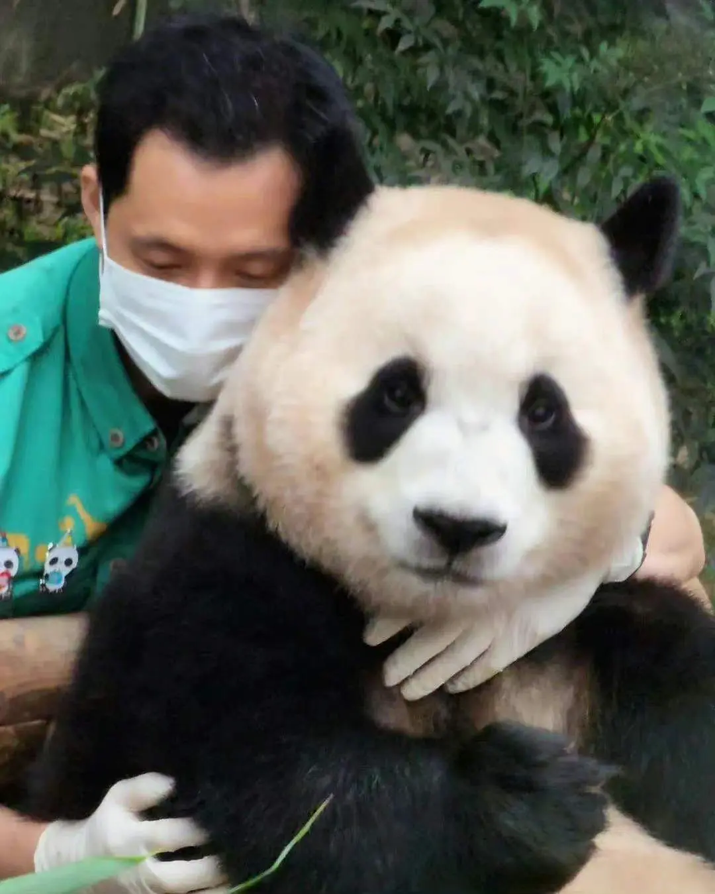
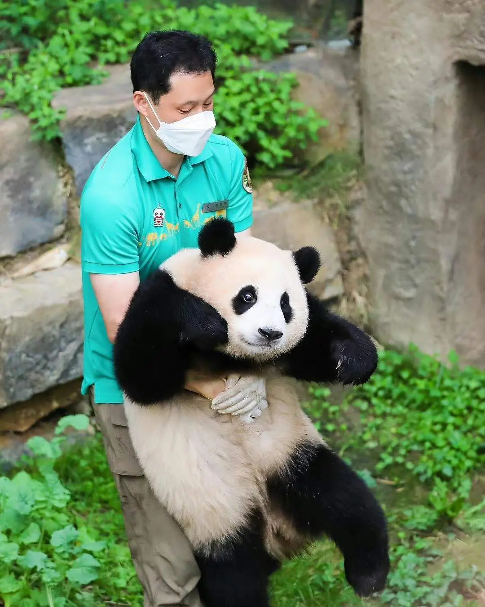
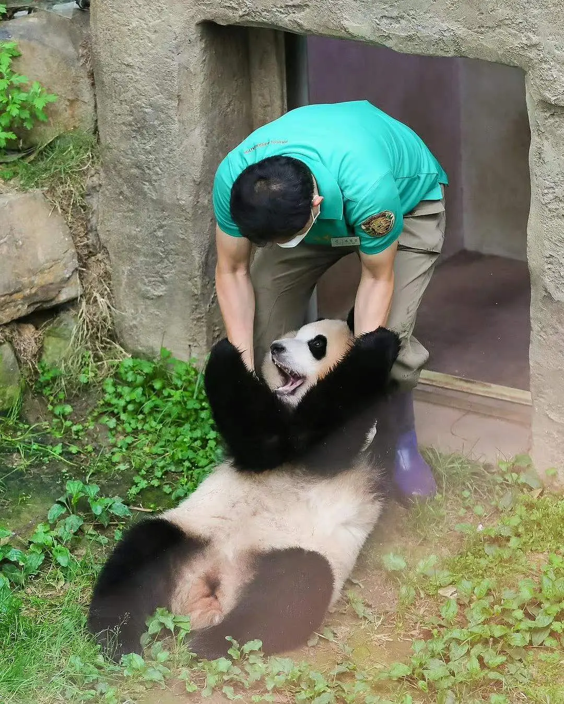

在爷爷陪伴下，我在韩国爱宝乐园度过了幸福的童年，我喜欢爷爷的靴子，喜欢爷爷送的竹子，
喜欢爷爷做的窝窝头和小玩具，有爷爷在，我就是全世界最幸福的小熊，可是我不久就要回我的家中国了，
我很舍不得爷爷，爷爷也很舍不得我，可是他告诉我要勇敢去面对熊生，读着爷爷给我写的信，
福福决定要带着爷爷的嘱托好好过好自己的熊生，不能让爷爷失望，55555可是每次看爷爷给我写的信，
我都好难过好难过，福福想对爷爷说，爷爷我永远爱你！无论以后遇到什么困难，
我会永远记得我是爷爷最爱的小孩，爷爷的爱会是我永远的港湾！
“我看着在日本的熊猫双胞胎返回中国，不知不觉的哭了。我的心真的很痛，福宝，好可爱又珍贵的宝贝只是在想你
走了以后怎么过，我流泪了，希望福宝回国后和叔叔阿姨一起制造比现在更多美好的回忆，我满怀真心向你走来，
你总是为我敞开纯粹幸福的道路，对我而言，你就是惊艳这个词的本身，和你自然而然的肢体接触集中于你的举
手投足，让我每天都感到新生，感谢因你而拥有的惊喜瞬间，以后也无比期待和你在一起的每时每刻偶尔也会因为
时光飞逝而怅然若失。
福宝，我爱你!你一定要记住，在遥远的将来，你可能长得很大很大，或许你已经是一个小熊猫的母亲，或许你经历
了许多困难，累得连一根手指都无力动弹，这个时候一定一定要记住，有人曾把八月的竹叶嫩芽一个一个的收集起来，
喂到你的嘴边，这一片一片，都是非常爱你，都是非常支持你的，你妈妈付出了很大的努力，才找到了这个世上最大的幸福，
在你很累的时候一定会有家人爱你，支持你，一定要记住。”--宋宝


